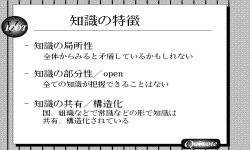

<html>
<head>
<title> Slide No.5 </title>
</head>

<frameset rows="350,*">

<noframes>
<body>
<a href="GIF/slide5.GIF"></a>

<a href="AU/voice5.au">
	</a>[559K]<p>
<!--		-->
まず、<blink> 知識には「局所性」</blink>
という特徴があります。つまり、
サイダーは日本では炭酸水から作られますが、西洋では
違うということなどです。
また、サイダーがアルコールかどうかに関しても、
米国と英国では全く違います。もし、「米国では」とか、
「英国では」という知識の局所性を認めないと、
矛盾することになります。<p>

次に、<blink> 知識には「部分性、あるいは open 」</blink>
という特徴があります。
サイダーの例で言うと、最初から世界のサイダーに
関して正しい知識を持っている人は少なく、
海外旅行や本を読むなどして初めて、世界にはいろいろな
サイダーがあることを知ります。つまり、データベースを
構築しようとする時、全ての知識を把握できていることは
少ないのです。<p>

他に <blink> 知識は「共有、あるいは構造化」</blink>
されています。
サイダーの例でもお分かりになると思いますが、国、組織、グループなどで
常識などの形で知識は共有、構造化されています。<p>

<b> Quixote </b> は、このような知識の特徴に対応できるよう
設計されています。<p>
<!--		-->

<hr>
<a href="slide6.html" target="_top">
	次の OHP へ</a><br><br>
<a href="slide4.html" target="_top">
	前の OHP へ</a><br><br>
<a href="HomePage.html" target="_top">
	OHP の一覧へ</a>
</body>
</noframes>

<frame src="slidebutton5.html">
<frame src="senslide5.html">

</frameset>

</html>